Communiquer efficacement
Comment la désinformation impacte notre rapport à l’actualité et aux autres
Comment transmettre une information ?
A
Quels sont selon vous les paramètres qui empêchent une communication claire ?
Entre ce que je pense, ce que je veux dire, ce que je crois dire, ce que je dis, ce que vous avez envie d'entendre, ce que vous entendez, ce que vous comprenez... il y a dix possibilités qu'on ait des difficultés à communiquer. Mais essayons quand même...
Bernard Werber
Pourquoi avons-nous du mal à communiquer ? Pourquoi sommes-nous sensibles à la désinformation ?
• Raisons cognitives
• Raisons sociales
• Raisons rhétoriques
Sommaire
• Percevoir correctement une information ?
• Communiquer précisément une information.
• Maitriser le débat.
• Les pièges rhétoriques.
Faites-vous confiance à votre cerveau ?
Click to play the video.
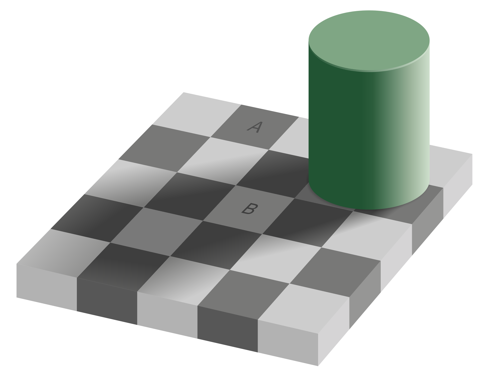
Faites-vous confiance à votre cerveau ?
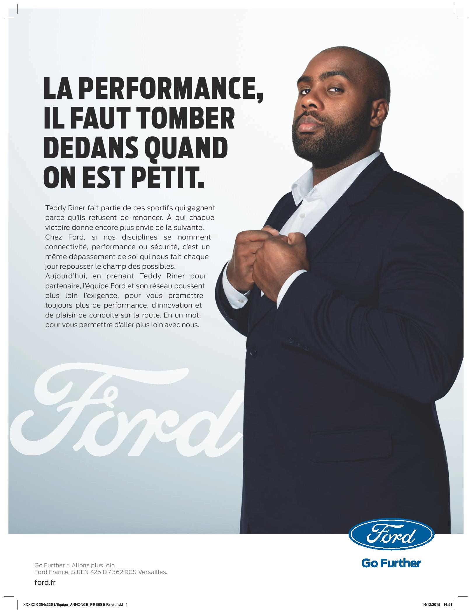
Les biais cognitifs !
C’est quoi, un biais cognitif ?
Distorsion dans le traitement « cognitif » d’une information.
Imaginez…
15 photos de chatons !!!

Il est tard, vous êtes chez vous, et vous allez sur les réseaux sociaux pour vous détendre…

Les biais cognitifs
Le biais de l’émotion
Jouer sur la peur
Jouer sur la peur
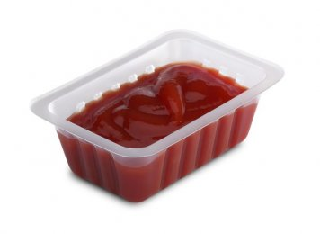
Imaginez…
• Vous passez quatre examens dans la journée.
• Vous réussissez le premier.
• Vous réussissez le second.
• Vous ratez le troisième.
• Vous réussissez le quatrième.
• Lequel vous aura davantage marqué à la fin de la journée.
Les biais cognitifs
Le biais de négativité
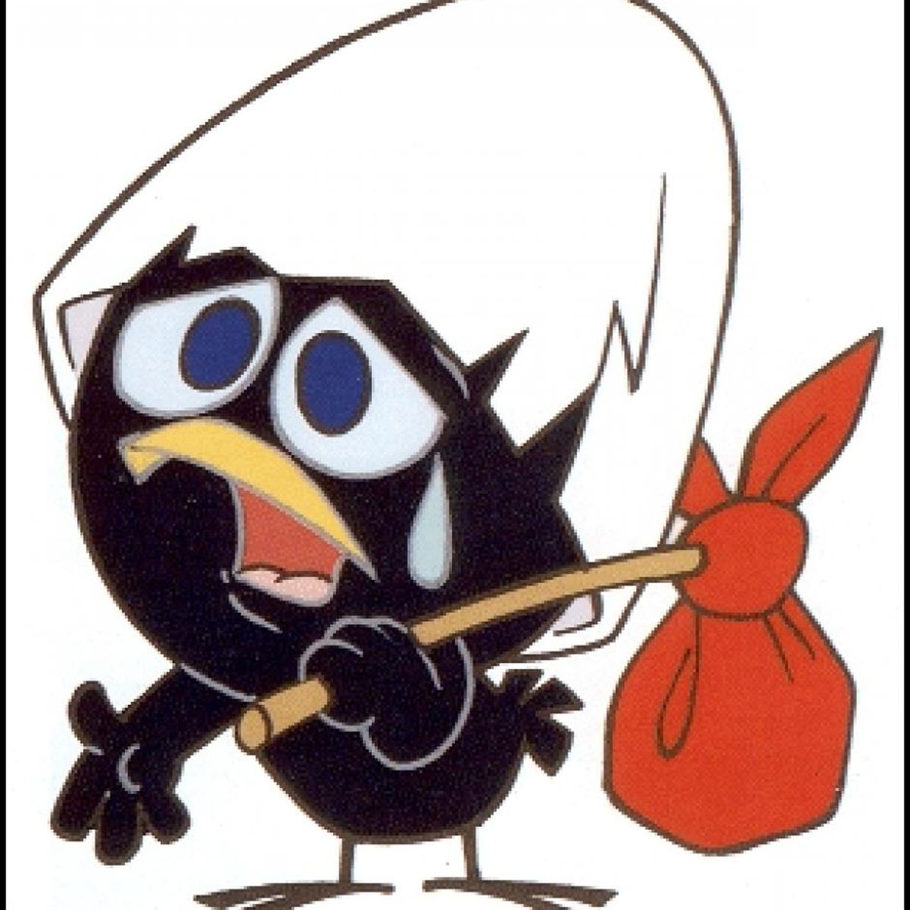
Comment les émotions peuvent impacter cette situation ?
A
Imaginez…
« Vladimir Poutine est un dictateur sanguinaire. »
Les américains menacent la Russie avec l’OTAN présent en Europe.
Explication 2
Poutine mène une guerre de conquête pour recréer le territoire de l’URSS.
Explication 1
La Russie se défend de l’expansion de l’OTAN
Hervé.
Julie.
Les femmes conduisent-elles moins bien que les hommes ?
Les faits
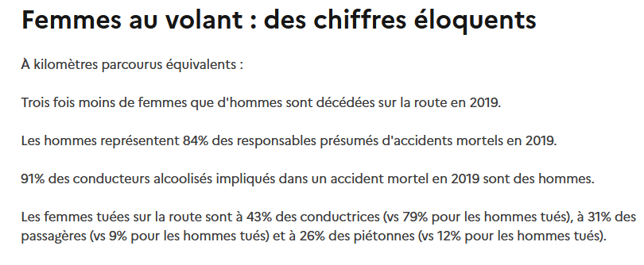
Source : https://www.interieur.gouv.fr/actualites/communiques/femmes-au-volant-vie-au-tournant
Les biais cognitifs
Le biais de confirmation !
Le piège n’est pas forcément de se faire avoir par une Fake News, mais de considérer comme Fake News une information vraie qui ne nous plait pas.
La première impression est-elle toujours la bonne ?
Effet pervers du biais de confirmation
Effet pervers du biais de confirmation
• Imaginez…
– Vous n’aimez pas un collègue.
– Vous vous comportez froidement avec lui.
– Ce dernier réagit en étant froid avec vous.
– Vous aviez donc raison de ne pas l’apprécier !
• Vous marchez dans la rue, quand soudain, un homme vous dépasse rapidement en vous bousculant.
• Première réflexion : cet homme est malpoli.
• Nouvelle information : cet homme vient de recevoir un appel grave et se précipite.
Erreur fondamentale d’attribution
• Tendance à attribuer le comportement des autres à des traits de personnalité plutôt qu'à des facteurs situationnels.
• Tendance à attribuer les succès à des capacités internes, et les échecs à des facteurs externes.
• Inverse dans les pays asiatiques comme le Japon.
• Peut aussi entraîner de nombreux préjugés.
Locus de contrôle
Les gens qui s’endorment avec les chaussures aux pieds ont plus de chances d’avoir mal à la tête en se réveillant le lendemain.
Pourquoi ?
3 concepts clés
• Concomitance : deux évènements arrivent de manière simultanée sans avoir de lien.
• Corrélation : deux évènements sont liés, sans que l’un ne soit la cause de l’autre
• Causalité : L’un des évènements provoque le second.
Concomitance
Plus Nicolas Cage sort de films, plus le nombre de morts dans les piscines aux Etats-Unis est important.
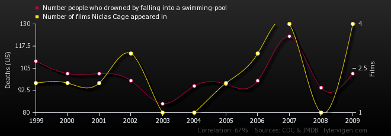
Corrélation
Plus l’on consomme des produits transformés, plus il y a de cancers.
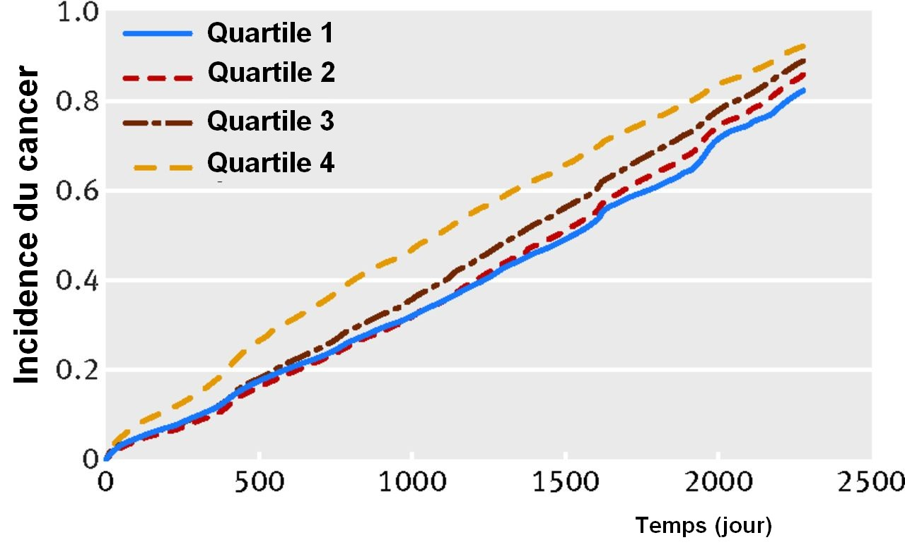
Causalité
Les médicaments et la guérison.
Quels liens pouvons-nous faire avec notre situation ?
Avez-vous des exemples où par erreurs nous imaginons une causalité entre deux évènements simultanés ?
Faisons des maths
Notre intuition n’est pas toujours la bonne


Question
1 € 10
Question
1 euro de plus
Question
?
Mécanisme du cerveau
Le système intuitif

Fonctionne vite !
Consomme peu d’énergie
Peut faire des erreurs.
Deux façons de penserTwo ways of thinking
Le système intuitifThe intuitive system
Fonctionne vite !
Consomme peu d'énergie.
Peut faire des erreurs.Works fast!
Uses little energy.
Can make mistakes.

Le système analytiqueThe analytical system
Fonctionne lentement.
Consomme beaucoup d'énergie.
Est plus rationnel, plus analytique.Works slowly.
Uses a lot of energy.
Is more rational, more analytical.
On écoute !
L’heuristique
Quand l’information est incomplète, on la complète
Lorsque les informations sont incomplètes, nous avons tendance à les compléter par nous-mêmes.
C’est généralement très pratique, mais cela peut conduire à des erreurs.
Des exemples ?
Exemple
Le drapeau américain flotte sur la lune.
Exemple
• Le drapeau américain flotte sur la lune.
• Or un drapeau qui flotte, c’est ça :
Exemple
• Le drapeau américain flotte sur la lune.
• Or un drapeau qui flotte, c’est ça :
• Or il n’y a pas de vent sur la lune.
Le drapeau américain flotte sur la Lune.The American flag is waving on the Moon.
Or il n'y a pas de vent sur la Lune,But there's no wind on the Moon,
donc un drapeau ne peut pas flotter.so a flag can't wave.
DONC il n'y a jamais eu de drapeau sur la Lune,SO there was never a flag on the Moon,
DONC on n'est jamais allé sur la Lune.SO we never went to the Moon.
Mais peut être que…
Il vous manque des informations.
Comment l’heuristique et les conclusions hâtives peuvent impacter notre quotidien ?
Notre cerveau a tendance à conclure (parfois) un peu trop vite.
Le 16 mai 2022, remaniement ministériel
Le 16 mai 2022, remaniement ministériel
Le 16 mai 2022, remaniement ministériel
Effet Koulechov
Exemple de situations sorties de leurs contextes ?
Exemple concret.
• Vous avez raté une promotion.
• Vous voyez votre collègue qui a un grand sourire.
• Conclusion :
• 1) C’est car il sait que vous avez raté votre promotion (le méchant !)
• 2) Il sait que c’est lui qui obtiendra votre promotion (le méchant !).
• Véritable raison : sa fille lui a fait un dessin trop mignon ce matin et ça le rend heureux.
Exemple
• « Il faudrait vraiment qu’il quitte ce boulot ! »
• Quels sont les différentes interprétations que l’on pourrait faire de cette phrase ?
Expérience de BARTLETT
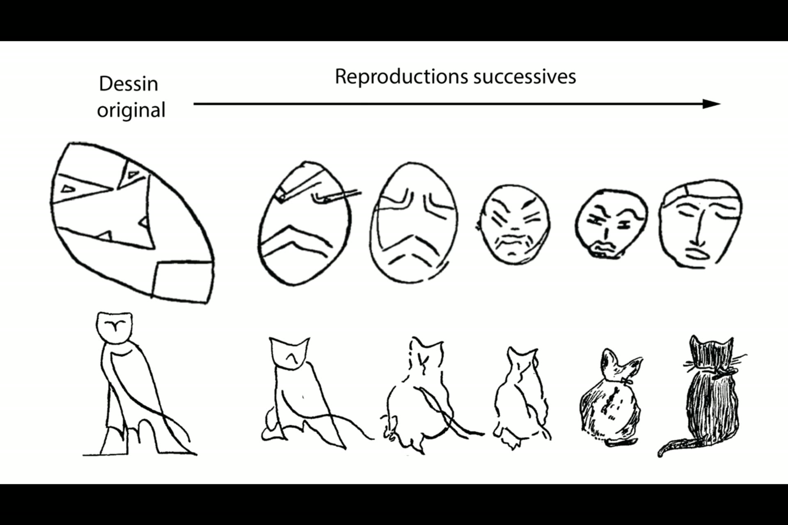
Expérience de BARTLETT
Expérience de BARTLETT
Expérience de BARTLETT
Quelles solutions ?
1
Quelles solutions ?
2
Quelles solutions ?
Si une information est trop belle pour être vraie, elle est probablement fausse !
Quelles solutions ?
Quelles solutions ?
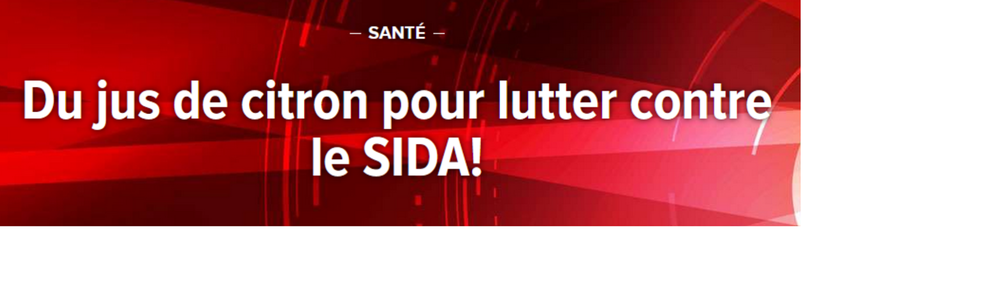
Quelles solutions ?
• Quelle est ma position sur cette information ? Ai-je envie d’y croire ? Suis-je ému par le message ?
• Quelle est la fiabilité du messager ? Quelle est sa légitimité pour évoquer ce sujet ?
Quelles solutions ?
Astuces
Si une information parait trop incroyable pour être vraie, elle est certainement fausse.
Le mystère de la dent d’or
Comment pouvez-vous expliquer ce mystere ?
La réponse, donnée un siècle plus tardThe answer, given a century later
La dent d'or de FontenelleFontenelle's golden tooth
« Il est vrai que cette méthode est bien lente pour la plupart des gens, qui courent naturellement à la cause, et passent par-dessus la vérité du fait ; mais enfin nous éviterons le ridicule d'avoir trouvé la cause de ce qui n'est point. »"Let us first make sure of the fact, before worrying about the cause.
It is true that this method is quite slow for most people, who naturally rush to the cause and skip over the truth of the fact; but at least we shall avoid the ridicule of having found the cause of something that does not exist." Bernard Le Bouyer de Fontenelle
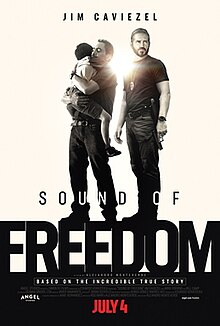
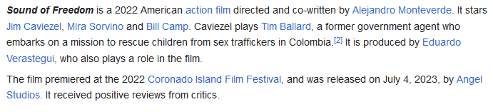
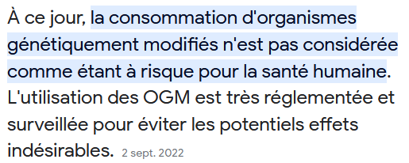
Le raisonnement fonctionne aussi pour les relations humaines
Application : s’assurer d’avoir BIEN compris le problème, la situation, avant de prendre une décision.
Comment communiquer une information efficacement ?
Comment communiquer une information efficacement ?
Question :
• A quel moment la perception de l’autre est-elle plus importante que mon intention ?
• Si une blague ne fait pas rire, est-ce la faute de la personne qui ne la comprend pas ou de la personne qui l’énonce ?
Biais cognitifs qui distordent notre manière de communiquer
Le biais de faux consensus
• Conviction que nos jugements, attitudes et croyances sont consensuellement partagées par la population.
• Par exemple, les commerciaux peuvent projeter leurs propres préférences dans les produits qu’ils proposent à leurs clients.
Illusion de transparence
• Tendance à surestimer le fait que notre attitude et nos intentions sont parfaitement compréhensibles par les autres.
• De même, c’es la tendance à penser que l’on comprend parfaitement l’état mental des autres.
Réalisme naïf.
• Tendance à penser que NOUS voyons la réalité objectivement (contrairement aux autres).
• Par conséquence, si les autres voient le monde différent, c’est qu’ils ne sont pas rationnels, ou bêtes !
• On retrouve cet effet dans le concept des « médias hostiles ».
Pourquoi on n’arrive pas à changer d’avis ?
Donc
Donc
Un avion ne pourrait pas voler si la Terre était ronde.
La Terre est plate
Donc
Un avion PEUT voler sur une Terre ronde.
La Terre est ronde.
L’argument est la CAUSE de la conviction.
Donc
Les avions ne peuvent pas voler sur une Terre ronde.
La Terre est plate.
Donc
L’horizon est plat
La Terre est plate.
On ne voit qu’une seule face de la lune
Les rails des trains ne sont pas courbés.
Je suis croyant
Je suis complotiste
Dans notre monde, qui ne l’est pas
L’argument est la CONSÉQUENCE de la conviction.
Conviction
« La Terre est plate. »
Arguments
- « L’horizon est plat. »
- « On ne voit qu’une seule face de la Lune. »
- « Les rails des trains ne sont pas courbés. »
- Donc
- L’horizon est plat
- La Terre est plate.
- On ne voit qu’une seule face de la lune
- Les rails des trains ne sont pas courbés.
- Je suis croyant
- Je suis complotiste
- Dans notre monde qui ne l’est pas
Comment diffuser l’information lorsqu’elle peut être conflictuelle ?
• Pourquoi une information peut être rejetée par l’élève ?
– Conséquence d’une conviction plus profonde.
– Conséquence d’une croyance personnelle ou religieuse.
– Engagement personnel dans la conviction.
– Situation conflictuelle du débat.
Conséquence d’une conviction plus profonde.Conséquence d’une idéologie personnelle ou religieuse.
– Montrer que l’on PEUT garder cette croyance tout en changeant sa conviction.
– Montrer que cette conviction peut se voir selon le prisme de la croyance (exemple : le COVID aux Etats Unis).
– Commencer par un sujet neutre, pour décrire un principe, puis allez sur un sujet plus « sensible » qui applique ce même principe.
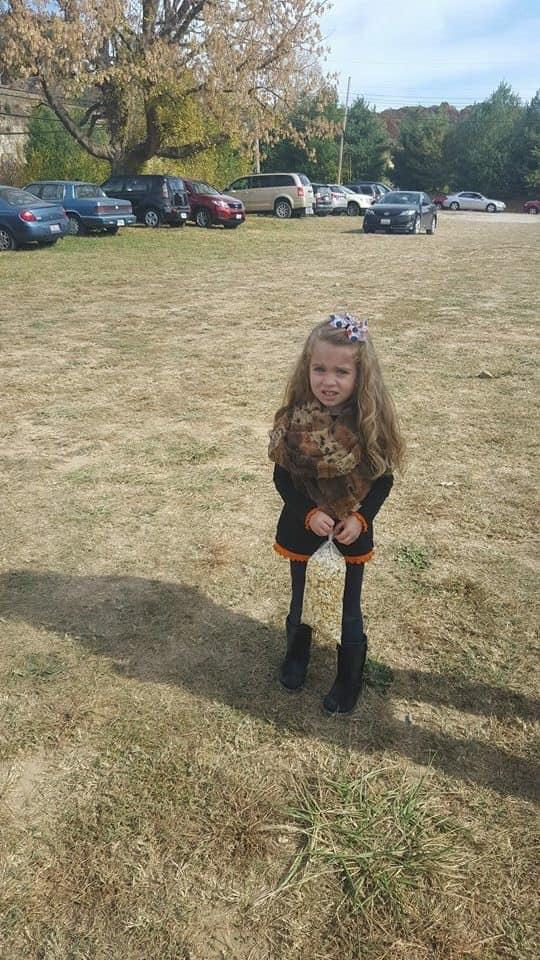
Engagement personnel dans la conviction.
• Garder un lien de confiance avec la personne.
• Montrer que c’est l’idée qu’on attaque, et non pas elle.
• Ne pas chercher à écraser l’autre.
• Ne pas chercher à convaincre la personne.
• Ne pas imaginer un changement de conviction de manière binaire mais progressive.
Situation conflictuelle du débat.
• Vous ne POUVEZ PAS gagner l’échange.
• Quitter l’affrontement en tête en tête.
• Ne pas chercher à écraser l’autre.
• Ne pas chercher à convaincre la personne.
• Ne pas imaginer un changement de conviction de manière binaire mais progressive.
• L’apprentissage et le changement d’idées erronées se fait sur le LONG TERME.
Solutions
A éviter
A développer
Solutions
• Expliquez le plus clairement possible les motivations qui mènent à votre décision une conclusion.
• Trouver un point d’accord avec l’interlocuteur, en dépend de vos désaccords.
• Ne cherchez pas à convaincre l’autre mais à rendre vos arguments compréhensibles.
Exercices
Trouvez des positions d’apparences contradictoires et trouver le point d’accord : (pro vaccin et anti vaccin) (pro nucléaire et anti nucléaire).
Principe de charité
- Partez du principe que l’interlocuteur est sincère… car c’est souvent le cas !
- Cela vous éviteras de tomber dans le biais d’engagement… ce qu’il se passera si vous vous énervez dès le début pour de mauvaises raisons !
L’entretien épistémique
• Dialogue ouvert : Encourage un échange respectueux.
• Exploration des croyances : Permet d'analyser les convictions et les raisonnements.
• Questionnement approfondi : Implique des questions pour clarifier et approfondir les idées.
• Réflexion critique : Favorise la pensée nuancée en évaluant les arguments et en considérant les perspectives divergentes de manière constructive.
Entretien épistémique
Les procédés rhétoriques fallacieux
La généralisation abusive
Mon voisin est un idiot, et il a des moustaches, dès lors tous les moustachus sont des idiots.
Le vrai écossais.
• « Tous les écossais sont roux !
• - Non, mon voisin est écossais, et il a les cheveux blonds.
• - Alors ce n’est pas un vrai écossais ! ».
Le biais de la popularité
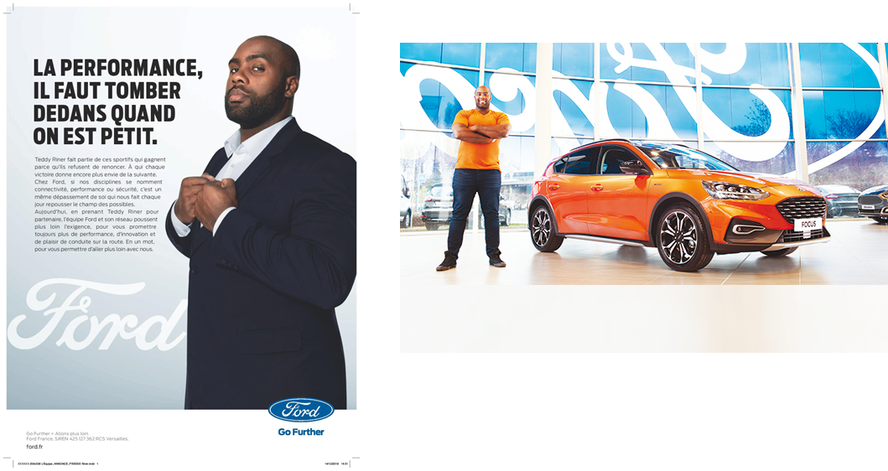
Appel à l’ancienneté !
• « Ma boulangerie existe depuis 1659, elle est donc forcément bonne ! »
• « Cette technique de soin est utilisée depuis l’Antiquité ! »
L’appel à la nature !
• « Si c’est naturel, c’est forcément bon ! »
• « Tu devrais goûter cette amanite phalloïde, elle est délicieuse ! »
La pente savonneuse !
« Si nous masquons les paquets de cigarette, demain on nous demandera de masquer nos bouteilles de vins ! Et se sera fini de notre terroir ! »
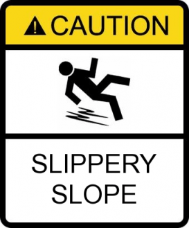
Appel au bon sens !
• Si c’est « évident », c’est forcément vrai.
• La Terre est plate, c’est évident !
Le faux dilemme
• Ne présenter que deux options, alors d’autres sont également possible.
• Si vous êtes CONTRE cette loi, vous êtes POUR les assassins d’enfants !
Le sophisme du juste milieu
• « Entre deux extrêmes, le choix central est généralement le plus juste. »
• Maintien de l’esclavage ou abolition totale de l’esclavage ?
Le biais de causalité
Si deux choses arrivent en même temps, c’est qu’elles sont liées.
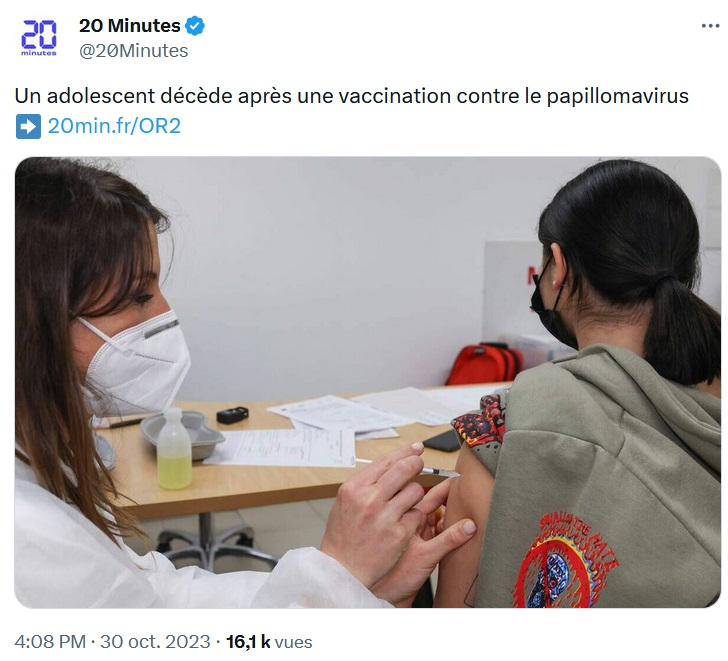
Le biais de causalité
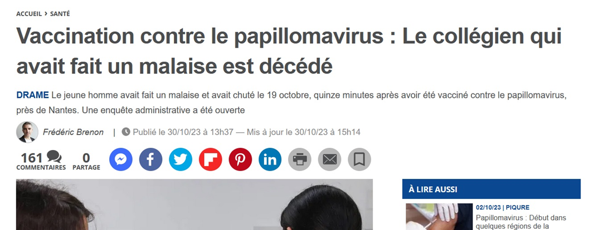
Le biais de causalité
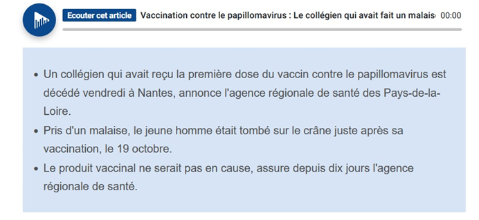
Le biais de causalité
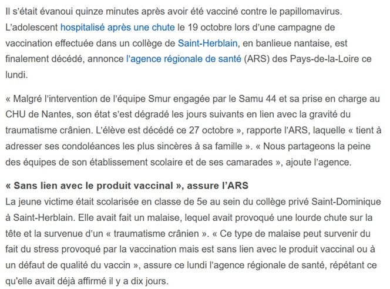
Le biais d’autorité
Si une personne a de l’autorité, elle a forcément raison !
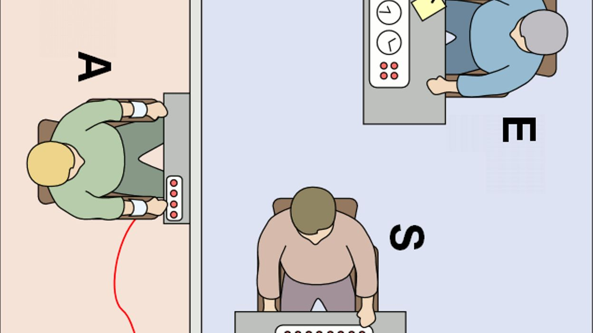
SophismeFallacy
Le sophisme du sophismeThe fallacy fallacy
Ce n’est pas parce qu’une personne utilise des sophismes dans son argumentation…Just because someone uses fallacies in their argument…
… qu’elle le fait exprès.… doesn’t mean they are doing it on purpose.
… que ses propos sont faux.… or that what they say is false.
La « désinformation factuelle »
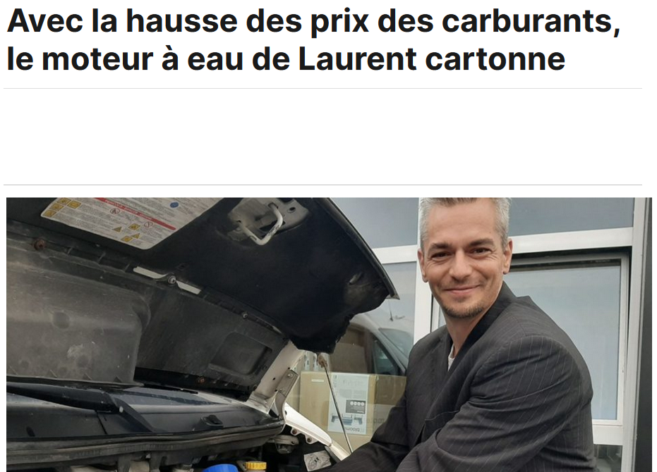
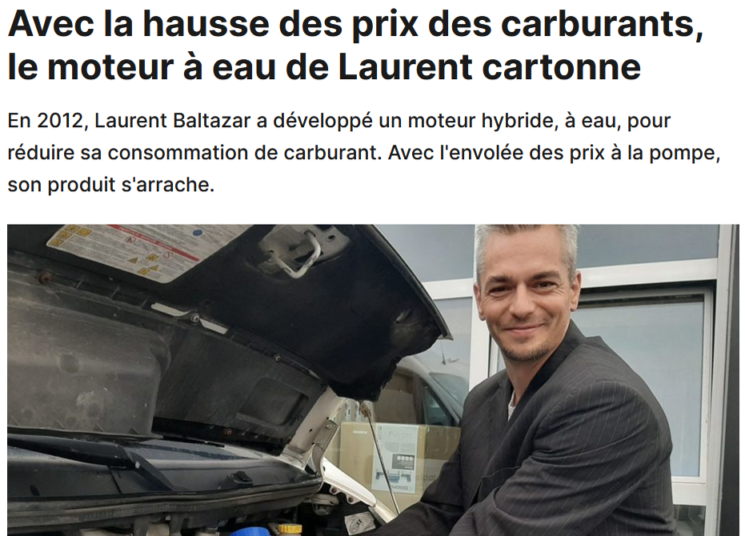
La « désinformation factuelle »
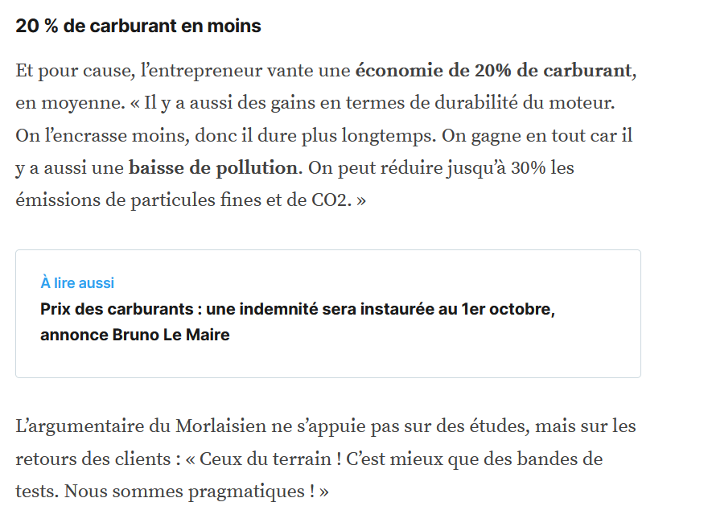
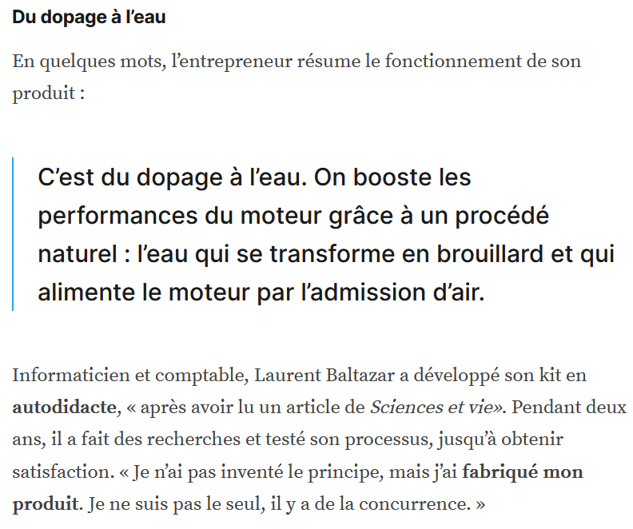
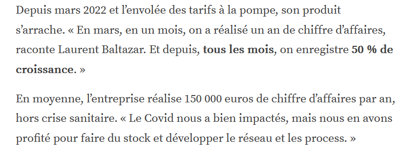
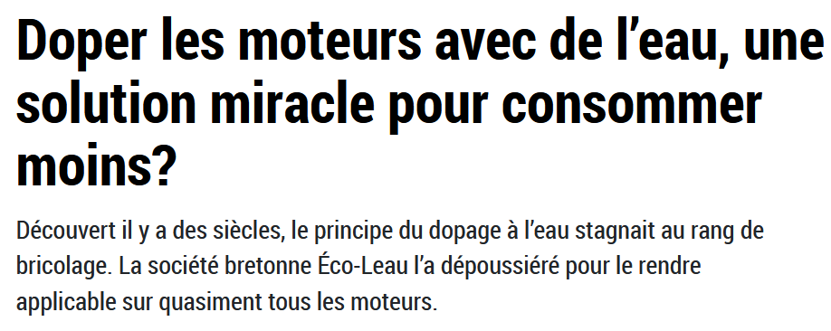
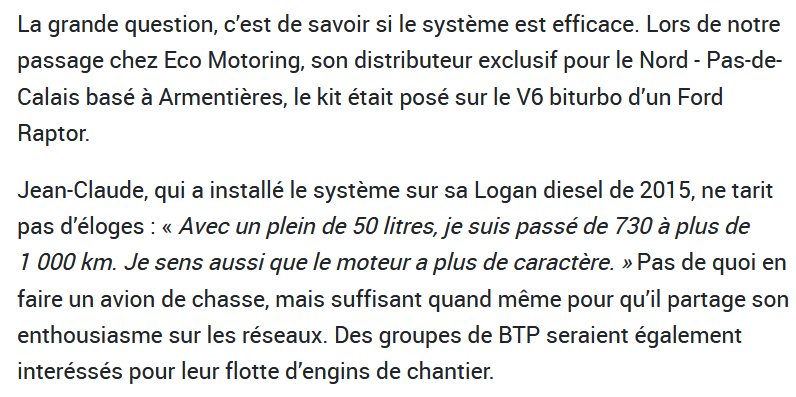
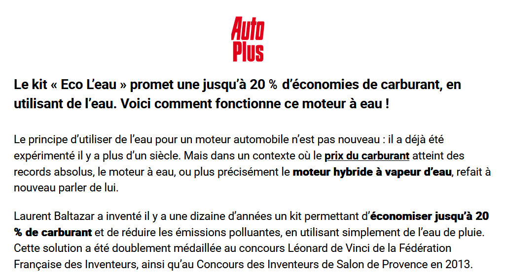
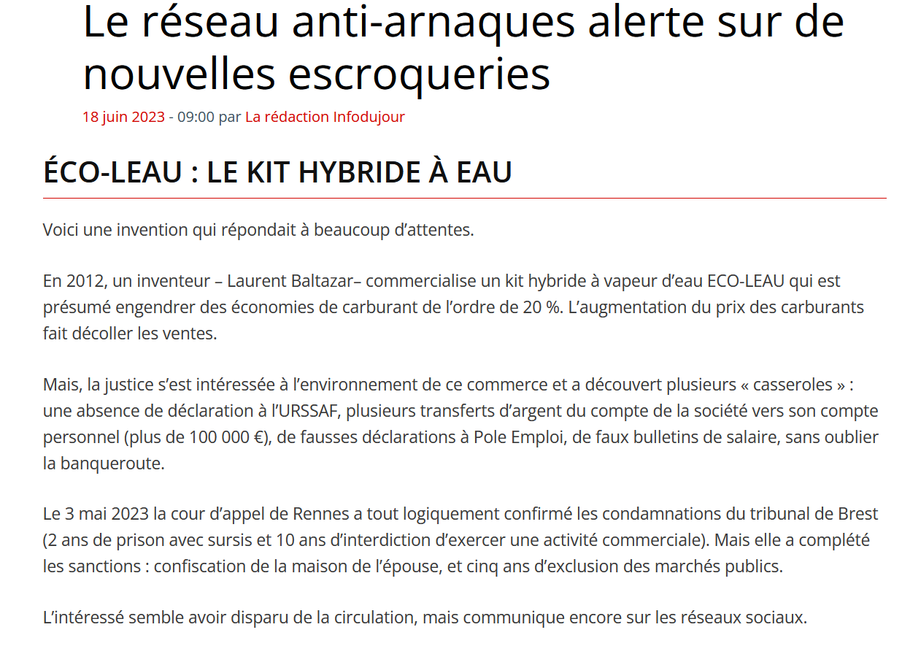
Parlons d’un sujet crucial, l’éducation ! Nous sommes à un tournant historique, et notre approche de l'éducation doit évoluer. Si vous n'adhérez pas à cette nouvelle réforme que je propose, vous êtes clairement opposé à l'évolution éducative. Des experts en éducation de renommée mondiale soutiennent cette approche, et si vous ne les suivez pas, vous ignorez délibérément les conseils des meilleurs. Les grandes nations asiatiques ont adopté des méthodes similaires et dominent désormais la scène mondiale. Pourquoi rester à la traîne ? Ignorer cette réforme, c'est mettre en péril l'avenir de notre jeunesse. Si vous ne soutenez pas ce plan éducatif ambitieux, c'est clair que vous ne vous souciez pas du progrès de notre nation. Les études montrent que les pays qui ont implanté ce modèle ont connu une croissance économique fulgurante, alors ne prenez pas le risque de laisser notre nation à la traîne dans la compétition mondiale.
Quelles solutions ?
Exemple concret d’échange
Exemple concret d’échange
« Un jour, les LGBTS domineront le monde et on sera obligé de vivre comme eux. »
- Généralisation (un garçon homosexuel -> tous les garçons homosexuels)
- Un raisonnement fallacieux : comme on m’a accusé d’homophobe car j’ai refusé les avances d’un homme,
- on ne pourra plus refuser les avance d’un homme sans être traité d’homophobe.
- Généralisation (un garçon homosexuel -> tous les garçons homosexuels)
- Un raisonnement fallacieux : comme on m’a accusé d’homophobe car j’ai refusé les avances d’un homme,
- on ne pourra plus refuser les avances d’un homme sans être traité d’homophobe.
- Conseil : briser la généralité, utiliser l’expérience personnelle (« moi, je n’ai jamais été dans ce cas de situation »)
- Conviction religieuse : difficile.
- Conviction religieuse : difficile.
- Sur le moment : je suis passé à autre chose.
- Conviction religieuse : difficile.
- Sur le moment : je suis passé à autre chose.
- Conseil : dire qu’il s’agit de ses croyances à lui, pas de celles des autres.
- Conviction personnelle : appel à la nature.
- Conseil :
- Sophisme de la pente savonneuse.
- Sophisme de la pente savonneuse.
- Conseil : le raisonnement par comparaison.
- Conviction, appel au « bon sens ».
- Conviction, appel au « bon sens.
- Conseil : demander ce qu’est la normalité, et utiliser le raisonnement par comparaison.
Conclusion
• Echanger une information, c’est compliqué !
• De nombreux facteurs, informationnels, motivationnelles, sociaux, cognitifs, peuvent entrer en jeu.
• MAIS il existe des solutions : le souhait de comprendre. D’être précis. Exacte. De nous concentrer sur les faits. D’avoir conscience de nos propres préjugés.
• Une meilleure communication est possible !
Merci !
Exercices
• Se renseigner sur les types d’exercice que l’on fait en entreprise.
• Idée : tenter de deviner quelque chose avec des indices vrais mais pas forcément logiques.
• Chacun écrit le sport qu’il imagine que la personne fait, ou des choses qu’il imagine, et on va voir si cela est vrai.
• Chacun écrit quelque chose qui peut paraître surprenant sur lui, et le but est d’identifier quelle caractéristique peut correspondre à quelle personne.
• Mise en scène où le but est de faire le maximum de « sophismes » possible.
• La personne met trois affirmations qui paraissent incroyables, deux sont vraies, l’une est fausse.
Exercice
• Mettez le nom de 4 collègues que vous connaissez le moins.
• Essayez de deviner leur vie familiale, leurs passions, etc.
• Allez ensuite demander au collègue et voyez si cela correspond à ce que vous avez écrit.
• https://www.digiformag.com/e-learning/4-jeux-issus-du-gamestorming-pour-animer-votre-formation/
• https://asana.com/fr/resources/team-building-games
• Jeux de rôle :
• Si vous étiez à la place de telle ou telle personne, situation imaginaire, que feriez-vous ?
• Demandez aux gens, de manière anonyme, ce qu’ils pourraient faire pour améliorer l’école s’ils en avaient le pouvoir.
• Demander aux gens quelle est la chose la plus difficile de leur métier.
• On fait des équipes de corps de métier différent, et on demande de régler le problème d’un autre corps de métier. Puis, l’équipe du corps de métier va réagir pour dire quelle solution fonctionne, et quelle solution ne fonctionne pas.
• Le dénominateur commun : les équipes doivent trouver un point commun avec tous leurs membres, mais il ne faut pas qu’il soit le plus évident.
• Quelles sont, pour vous, les points à améliorer au sein des établissements.
• A votre avis, quelques sont les biais émotionnels qui empêchent de trouver une solution ?
• Quelles sont les heuristiques, c’est-à-dire le manque de contexte, qui empêchent de trouver une solution ?
"Le yoga est la clé ultime pour une vie saine. Toutes les personnes en bonne santé que je connais pratiquent le yoga, donc si vous voulez être en bonne santé, vous devez absolument le faire. Les grandes civilisations anciennes, comme les Égyptiens et les Grecs, pratiquaient le yoga, prouvant ainsi son efficacité à travers les siècles. Si vous n'aimez pas le yoga, vous êtes probablement contre la santé holistique. Les célébrités adorent le yoga, et elles sont toutes en forme. Si vous ne suivez pas leur exemple, vous choisissez délibérément de négliger votre bien-être. Les études montrent que les personnes qui ne pratiquent pas le yoga ont une qualité de vie inférieure, alors ne prenez pas le risque de passer à côté de tous ces bienfaits."
"Si vous ne faites pas de même que les jeunes générations en adoptant les réseaux sociaux comme moyen principal de communication, vous risquez de devenir obsolète. Les experts en marketing le disent, et ils ont étudié cela toute leur vie. Ignorer les plateformes populaires, c'est refuser de vous adapter à la société moderne. Toutes les personnes influentes que je connais ont des milliers de followers, donc si vous ne les rejoignez pas, vous manquez clairement le train de la notoriété. Si vous n'avez pas un grand nombre d'abonnés sur vos réseaux sociaux, vous n'êtes pas influent. Si vous ne suivez pas leurs conseils, vous compromettez votre visibilité et votre succès en ligne."
Idée d’exercice : l’art de partager les informations
• https://web.archive.org/web/20130310205751/http://www.cscollege.gov.sg/Knowledge/Odyssey/Facilitating%20Team%20Effectiveness/Pages/The%20Science%20of%20Effective%20Team%20Discussions.aspx
• n 1985, psychologists Garold Stasser and William Titus conducted a study2 where they asked Miami University students to make a simple group decision in selecting a student body president. The first group received data where there was more positive information on candidate A than candidate B. Candidate A had eight positive, four neutral and four negative qualities. Candidate B, however, had four positive, eight neutral and four negative qualities.
• A second group was given the same data – however, this time, the positive information on candidate A was split up and handed out in parts among the group members. This meant that each member was told that candidate A possessed two positive, four neutral and four negative qualities.
• The first group selected candidate A unanimously. However, the other group picked candidate B even though collectively, there was more pro-candidate A information. Stasser and Titus argue that this happened because each group member had already formed an unfavourable impression of Candidate A based on the initial information provided. However, instead of sharing vital pieces of knowledge to determine the more suitable person for the role, people spent most of their time recalling pieces of information which supported their original preference.
Idée donc :
• Diviser en deux groupes, et leur demander de choisir entre deux candidats.
• Pour le premier groupe, nous montrons à chaque individu les 8 qualités du candidat A (et 4 neutres, et 4 négatives). Le candidat B possède 4 caractéristiques positives, 8 caractéristiques neutres et 4 caractéristiques négatives.
• Pour le deuxième groupe, on ne présente du candidat A que 2 qualités à chaque fois, ainsi les 8 qualités sont réparties sur plusieurs papiers. Pour parvenir à juger le meilleur candidat, les participants doivent ainsi partager leurs informations (ce qu’ils ne feront que difficilement, ayant déjà formé un avis sur la personne A).
Idée : happy birthday ?
Est-ce que mon interlocuteur est IDIOT ?
• Est-ce que c’est moi ?
• Ou est-ce que c’est plus compliqué ?
Quel est le but du langage ?
• Simplement communiquer ?
• J’échange à mon interlocuteur les informations que j’énonce ?
Les sous-entendus (ce que l’on veut faire comprendre)
• Tu es sûr que tu manges assez ?
• Elle est gentille, Samantha, hein ?
• Tu veux aller boire un verre après les cours ?
Les prémisses implicites
• « Vous n’en n’avez pas assez de cette racaille qui vous embête ? »
• « La situation économique est désastreuse. Nous devons absolument baisser les charges sociales / augmenter les impôts »
• « Robert Troispardieu ne peut pas être un agresseur sexuel voyons. C’est un acteur fabuleux. »
• Que veut dire « ouvrage » ?
• Que veut dire « livre » ?
• Que veut dire « bouquin » ?
Deux types de définition.
• La dénotation
• Le sens littéral d’un mot ou d’une phrase.
• La connotation
• Le sens subjectif d’un mot ou d’une phrase.
Les hommes sont plus forts que les femmes.
• Le sens descriptif
• Le sens prescriptif / normatif
« Je vous déclare mari et femme »
La valeur performative d’une phrase.
• Aspect illocutoire
– La fonction normative de la parole.
• Aspect perlocutoire
– L’affect psychologique de nos paroles.
– Parfois le but n’est pas le sens de ce que l’on dit, mais de l’émotion que l’on produit.
L’appel à l’émotion
D’accord, mais à part le langage ?
Effet de simple exposition
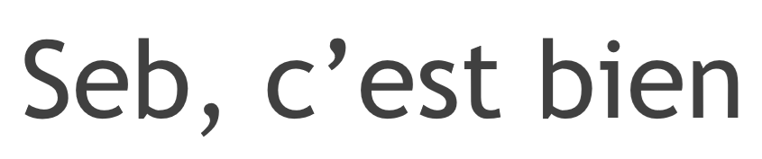
L’absence de contexte favorise l’incompréhension
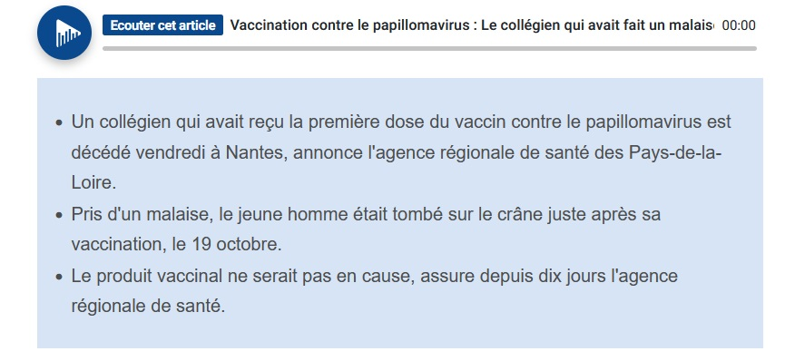
Structure même des réseaux sociaux
Absence de contexte
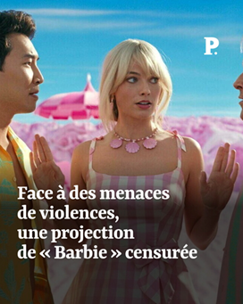
Structure même des réseaux sociaux
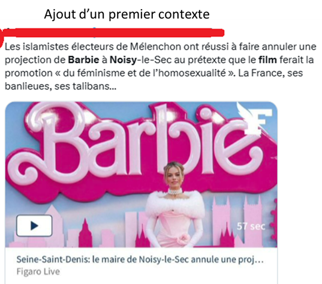
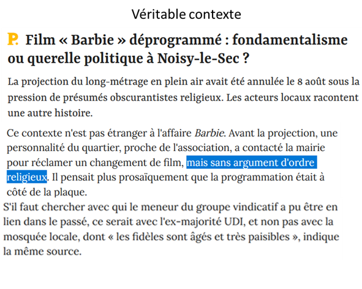
Le langage, ce n’est pas que le langage
• C’est un outil social essentiel, stratégique, et émotionnel.
• C’est n’est pas mal ou bien… c’est comme ça !
• Il peut être partiel, parcellaire… et mal compris.
Au-delà du langage, qu’est-ce qui empêche une communication claire ?
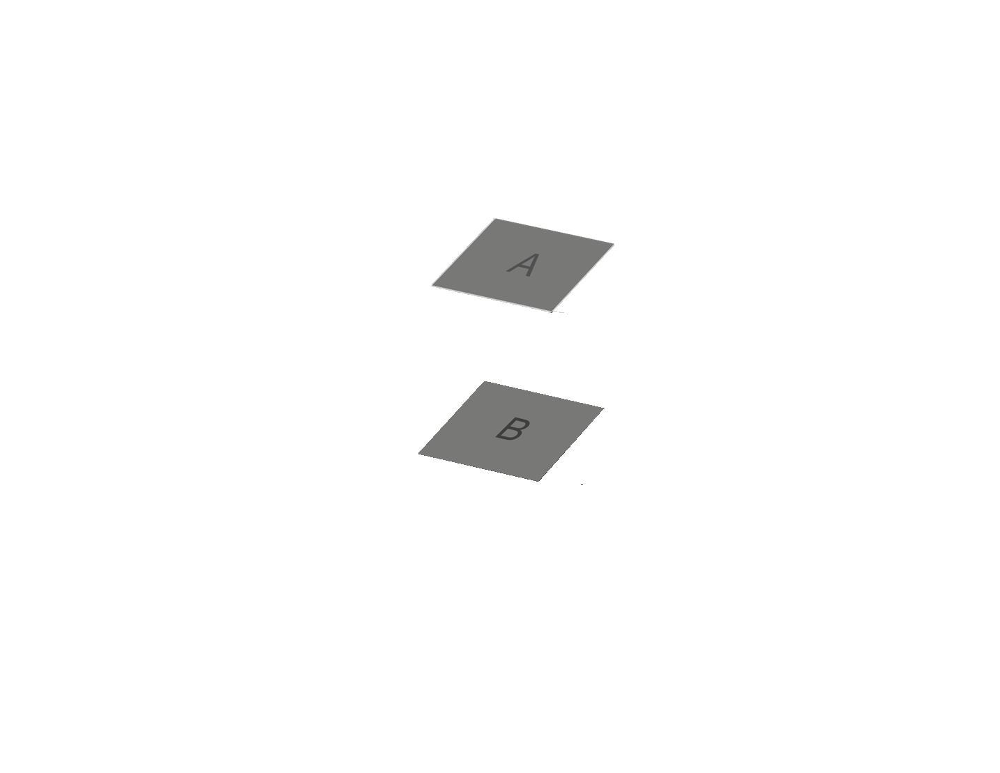
Réalisme Naïf
• « Les choses sont telles que je les vois. »
• Appliquée à la psychologie : Je suis persuadé que je conçois les choses de manière réaliste (et donc que les gens qui pensent différemment que moi ne perçoivent PAS les choses de manière réaliste).
Biais de disponibilité
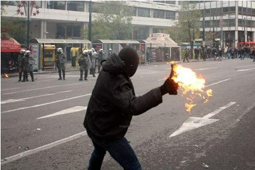
Conséquence pour nous
• Notre vision du réel dépend des éléments que nous avons perçu du réel.
• De part son expérience, chacun perçoit des éléments différents du réel.
• Et ceux-ci sont démultiplié par la répétition.
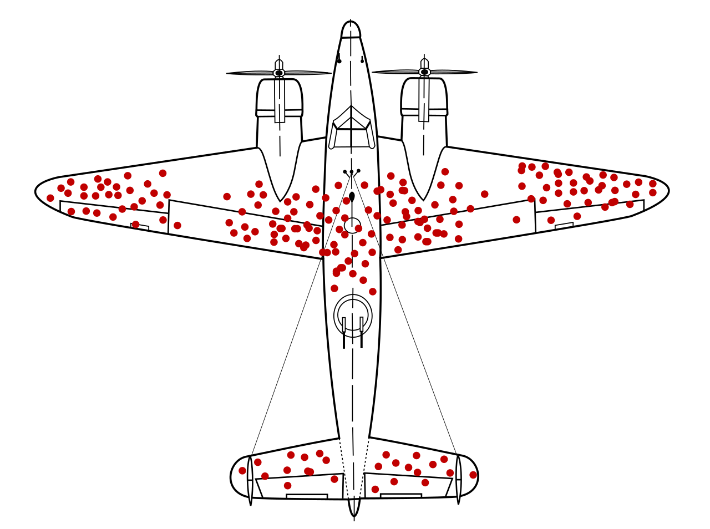
Biais de faux consensus
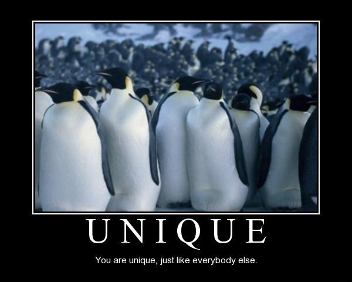
Je lui parle, et il ne comprend pas.C’est bon, il est débile !
Ou alors…
Illusion de transparence.
• Tendance à considérer que NOTRE intention est parfaitement claire.
• « J’ai bien montré à mon chef, par de subtiles hochements de tête au bon moment, que je souhaitai une augmentation. Il comprendra ! »
• « Il ne comprend pas ce que je veux dire, il fait donc FORCEMENT exprès ! »
Points importants
• Les gens n’ont pas les mêmes connaissances sur un sujet, et donc leur conclusion peuvent être différentes.
• Ce n’est pas parce qu’une personne est en désaccord avec vous qu’elle n’a « pas compris » le problème (ou votre position). On peut avoir le même niveau de connaissance sur un sujet ET être en désaccord !
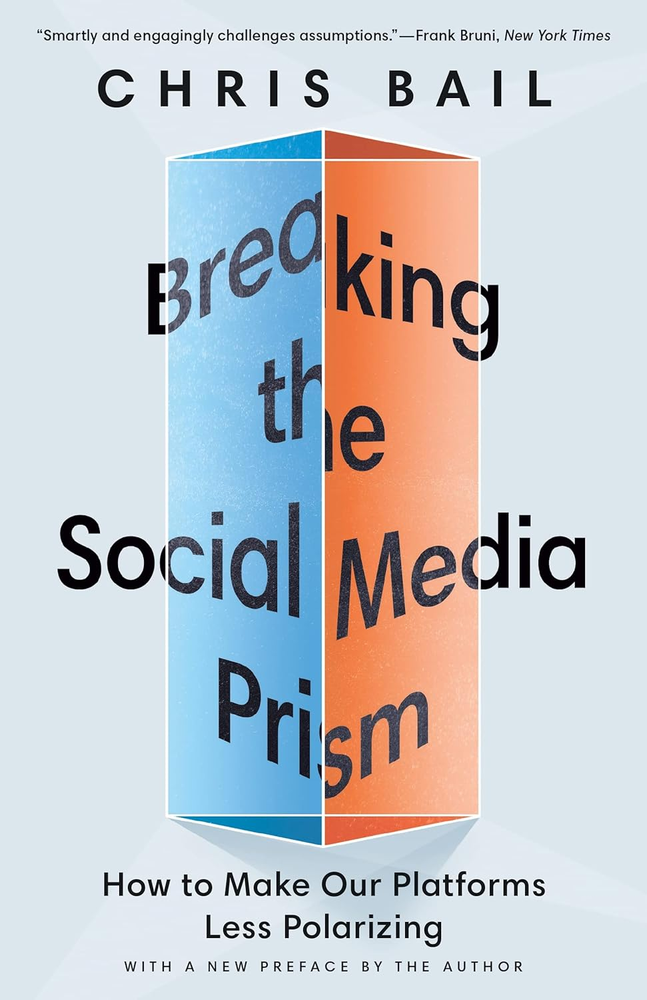
Pourquoi les réseaux sociaux favorisent naturellement la radicalité ?
Pourquoi les réseaux sociaux favorisent naturellement la radicalité ?
• Les personnes aux opinions extrêmes sont naturellement plus enclines à promouvoir leurs idées.
• Elles ont aussi tendance à passer davantage de temps sur les réseaux sociaux.
• Ces plateformes constituent l’endroit idéal pour exprimer des opinions non conventionnelles.
• Les discours radicaux provoquent davantage de réactions – un contenu parfait pour nourrir les algorithmes.
• Les individus plus nuancés ou « centristes » finissent par s’éloigner de ces espaces, ce qui rend les voix radicalisées surreprésentées.
Mais n’oublions pas…


Comment s’en sortir ?
Comment diffuser l’information lorsqu’elle peut être conflictuelle ?
- Pourquoi une information peut être rejetée par l’élève ?
Dans un monde idéal
L’argument est la CAUSE de la conviction.
Argument
« Un avion ne pourrait pas voler si la Terre était ronde. »
« Un avion PEUT voler sur une Terre ronde. »
Conviction
« La Terre est plate. »
« La Terre est ronde. »
Comment diffuser l’information lorsqu’elle peut être conflictuelle ?
Croyance — personnelle ou religieuse.
Biais d’engagement — on s’est investi dans cette conviction.
Contexte social — difficulté d’admettre son erreur en public.
Croyance
Montrer que l’on PEUT garder cette croyance tout en changeant sa conviction.
Montrer que cette conviction peut se lire au prisme de la croyance — le COVID aux États-Unis, par exemple.
Biais d’engagement
Garder un lien de confiance avec la personne.
Montrer que c’est l’idée qu’on attaque, et non pas elle.
Expliquer d’où l’on tire son propre raisonnement.
Ne pas chercher à écraser l’autre.
Ne pas chercher à convaincre la personne.
Contexte social
Vous ne POUVEZ PAS gagner l’échange : son but n’est pas de vous convaincre vous, mais les autres.
Quittez l’affrontement en milieu social.
Ne pas chercher à écraser l’autre, ni à le convaincre sur-le-champ.
- Donc
- Un avion ne pourrait pas voler si la Terre était ronde.
- La Terre est plate
- Dans un monde idéal
- Donc
- Les avions ne peuvent pas voler sur une Terre ronde.
- La Terre est plate.
- Dans notre monde qui ne l’est pas
Quelques conseils généraux
Commencer par un sujet neutre, pour décrire un principe. Puis aller sur un sujet plus sensible, qui applique le même principe.
Eviter l’homme de paille, privilégier l’homme de fer
• Meilleure phrase : je ne suis toujours pas d’accord avec toi, mais je comprends pourquoi tu penses ce que tu penses.
• Cela n’empêche pas d’être militant ! (On peut comprendre pourquoi une personne est raciste et combattre ces idées).
Pour lutter contre le biais de status quo : Raisonnement contre factuel
Autre exemple…
Humilité épistémique
• Je ne sais pas tout.
• Je suis également biaisé.
• Je m’exprime parfois comme une huître sur les réseaux sociaux
• Je peux tomber dans des pièges.
• L’autre sait peut être mieux que moi.
• La légitimité de ses opinions a autant de valeur que la mienne.
Le principe de charité.
Trouver des solutions également pour les problèmes structurels des réseaux !
Merci !
Après la séanceAfter the session
Le bilan, les jeux, et votre retourSummary, games, and your feedback
Scannez ce QR code : vous pourrez donner votre retour, revoir le bilan de la formation ou rejouer aux jeux.Scan this QR code: you can leave your feedback, review the session summary, or play the games again.
![QR code vers la page antoninatger.github.io/interventions/retours]() antoninatger.github.io/interventions/retours →antoninatger.github.io/interventions/retours →
antoninatger.github.io/interventions/retours →antoninatger.github.io/interventions/retours →